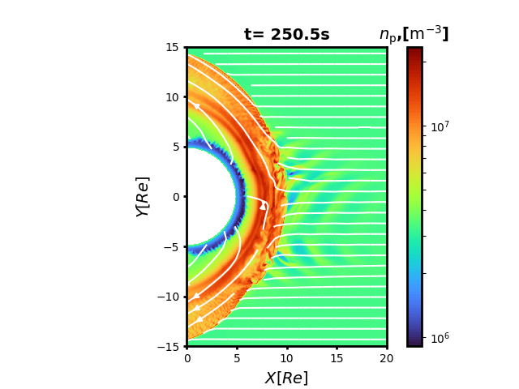
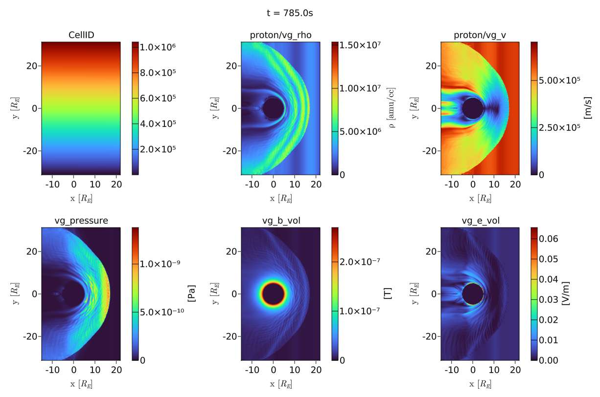
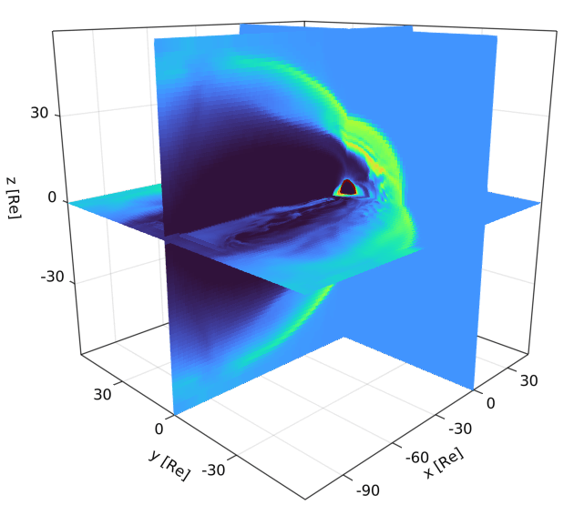
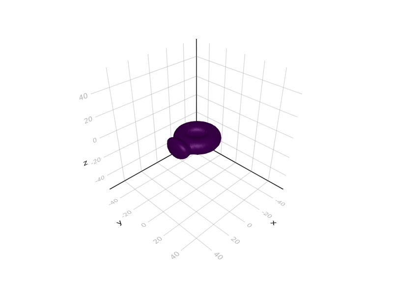
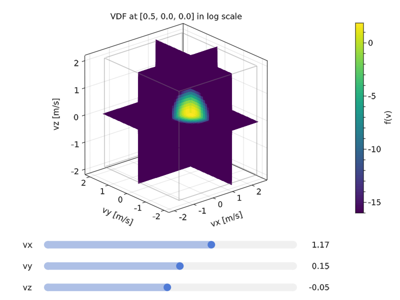
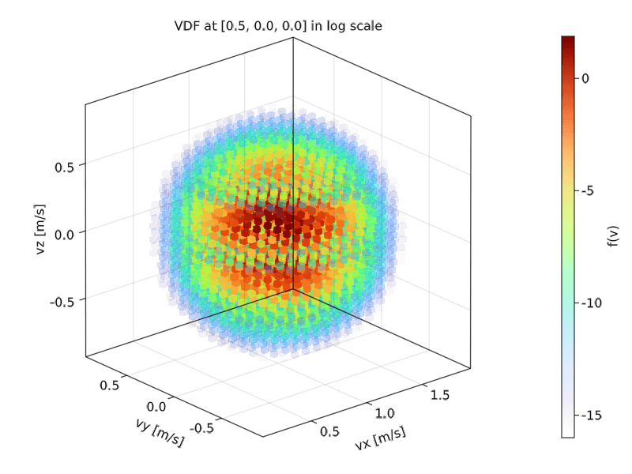

Gallery
PyPlot
- Proton density in a laminar flow with points denoting cell centers. demo

- Proton density of Earth's magnetosphere in the meridional cut from 2D simulation, with fieldlines through fixed seeding points. demo

- Proton density of Earth's magnetosphere in the meridional plane from 3D simulation.

- Proton density of Earth's magnetosphere in the equatorial plane from 2D simulation, zoomed in to the magnetosheath and foreshock region, with streamlines and density contour at 10 amu/cc. demo

- Proton density of Earth's magnetosphere in the normal cut planes from 3D simulation. demo

- Proton phase space distribution projected onto the X-Z plane. demo

Makie
Demos can be found in the Usage section of VlasiatorMakie.
- Various colored contours from 2D equatorial run

- Interactive proton density slice from 3D AMR run

- Three orthogonal slices of proton density from 3D AMR run

- Isosurface of Bz = 0 from 3D AMR run

- Proton phase space distribution projected onto the X-Z plane

- Interactive proton phase space distribution in the three orthogonal planes

- Proton phase space distribution

ParaView
VLSV files can be converted to the structured VTK format, and then visualized in ParaView.
- 2D slice contour of density in the meriodional plane with streamlines

- 2D slices of density viewing from upstream